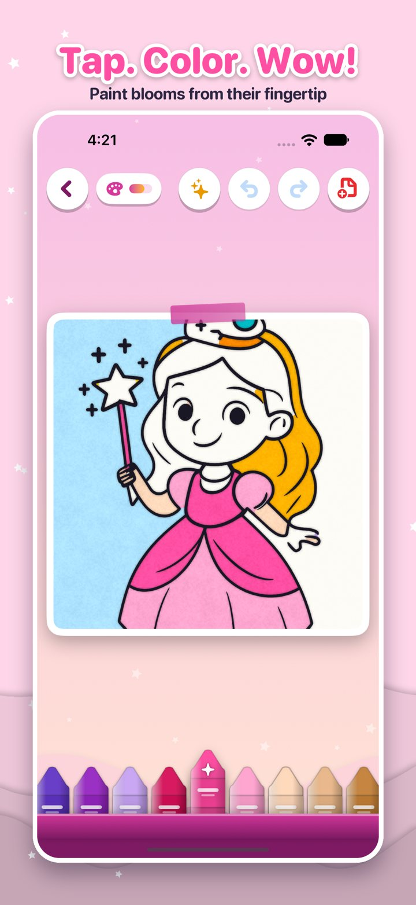
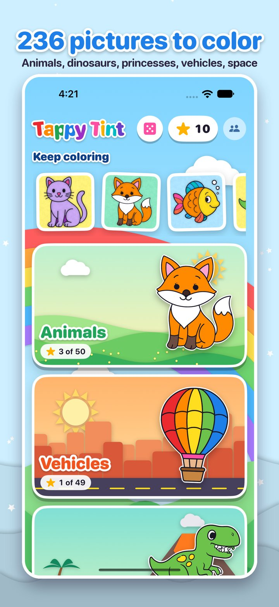
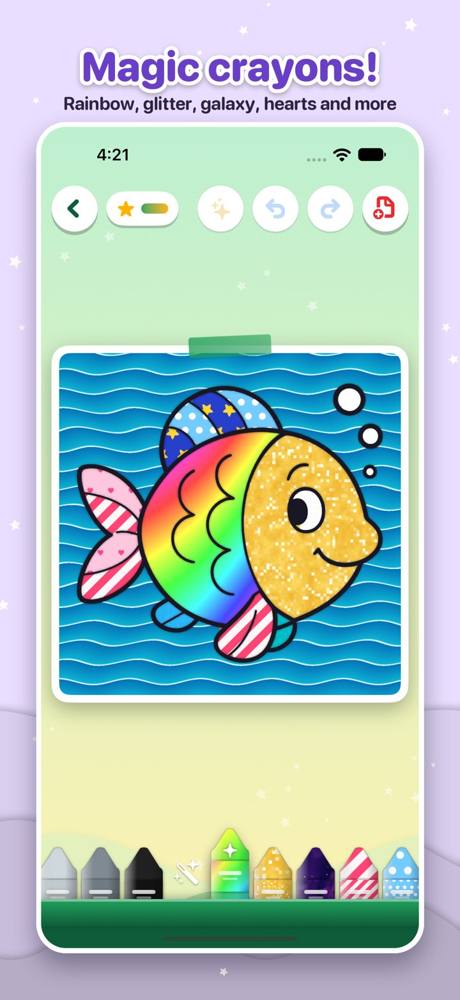
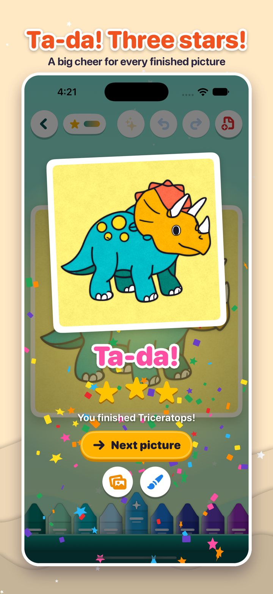
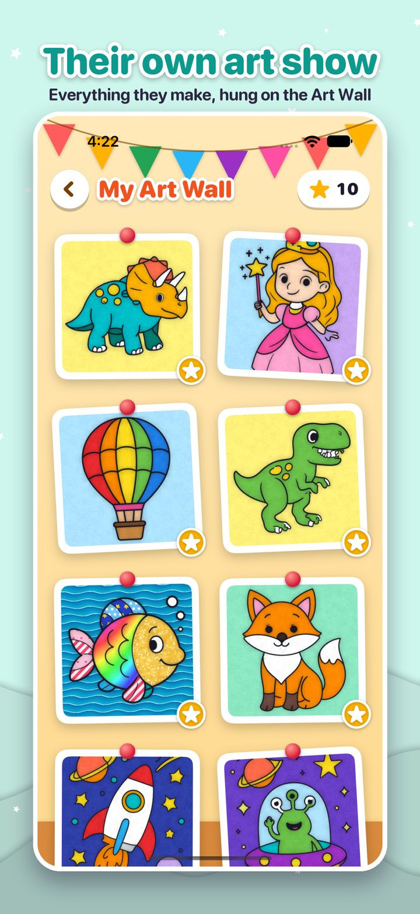
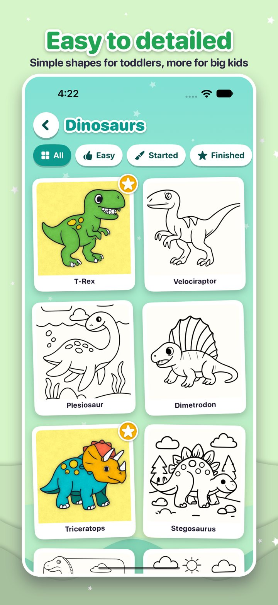
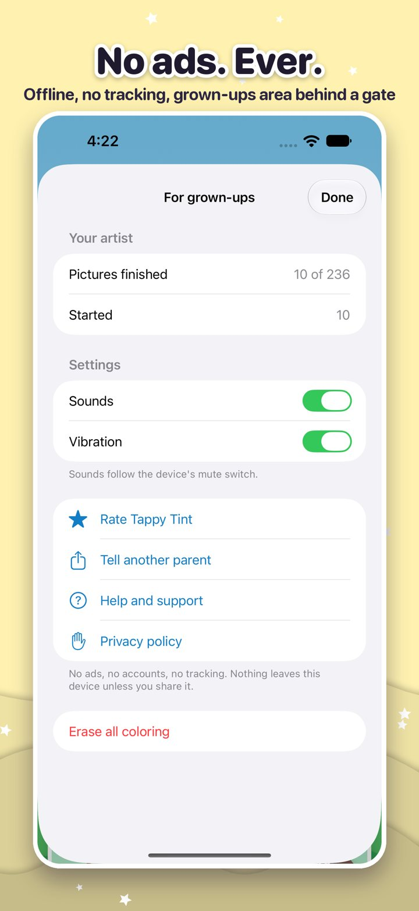

Tap. Color. Wow!
A coloring book made for small fingers. Touch a part of the picture and paint blooms out from their fingertip. No ads, nothing to buy inside, and no internet needed.
Get it on the App Store






236 pictures
Animals, vehicles, dinosaurs, princesses and space, from simple shapes for toddlers to big scenes for older kids.
Magic crayons
32 crayons with a range of skin tones, plus rainbow, gold glitter, galaxy, candy stripes, polka dots, hearts, stars and ocean.
Made for parents
No ads, no tracking, no accounts. Works on planes and road trips. Settings and links sit behind a grown-ups gate.